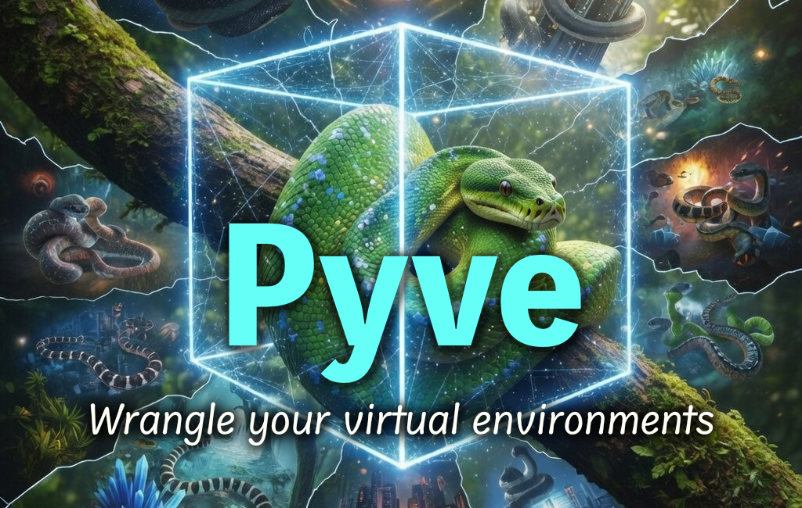

One pyve.toml, any stack. Pyve auto-detects, pins versions, activates, and tears down across Python (venv/micromamba) and Node (pnpm/npm/yarn) — composed into one direnv activation, one .gitignore, and one health report.
# Install Pyve via Homebrew brew install pointmatic/tap/pyve # Initialize your project environment cd ~/my-project pyve init # Run commands inside the environment pyve run python --version pyve run pytest tests/
Everything you need to manage your project's environments, in one tool.
Initialize language versions, environments, direnv, and .gitignore in a single pyve init.
One pyve.toml declares every stack. Python and Node today, more through a plugin contract — composed into one activation and one health report.
venv or micromamba for Python; pnpm, npm, or yarn for Node — auto-detected from your project files.
Run commands inside the project environment with pyve run — no manual activation, no shell state.
pyve purge removes all artifacts while preserving your secrets and user data.
Non-interactive flags (--no-direnv, --auto-bootstrap, --strict) for reproducible pipelines.
pyve check reports health with CI-safe exit codes; pyve status snapshots what a project is.
Declare run / test / utility envs by name. pyve test runs in an isolated test env that survives force re-init.
pyve upgrade re-resolves dependencies without touching the env; pyve init --force rebuilds from the declaration and restores recorded state.
Pure Bash script — no runtime dependencies, no daemons, no background processes.
Make things easy and natural, but avoid being invasive.
pyve.toml) for every environmentpyve purge — preserves your secretspyve upgrade / init --force)Pyve is a focused command-line tool that gives every project a single, declarative entry point for setting up and managing its environments across language ecosystems on macOS and Linux. A root-level pyve.toml names each environment and its purpose; language plugins (Python and Node today, more through a stable contract) materialize them through their own backends and compose into one direnv activation, one .gitignore, and one health report. It supports interactive workflows with auto-activation and non-interactive CI/CD pipelines via explicit execution with pyve run.